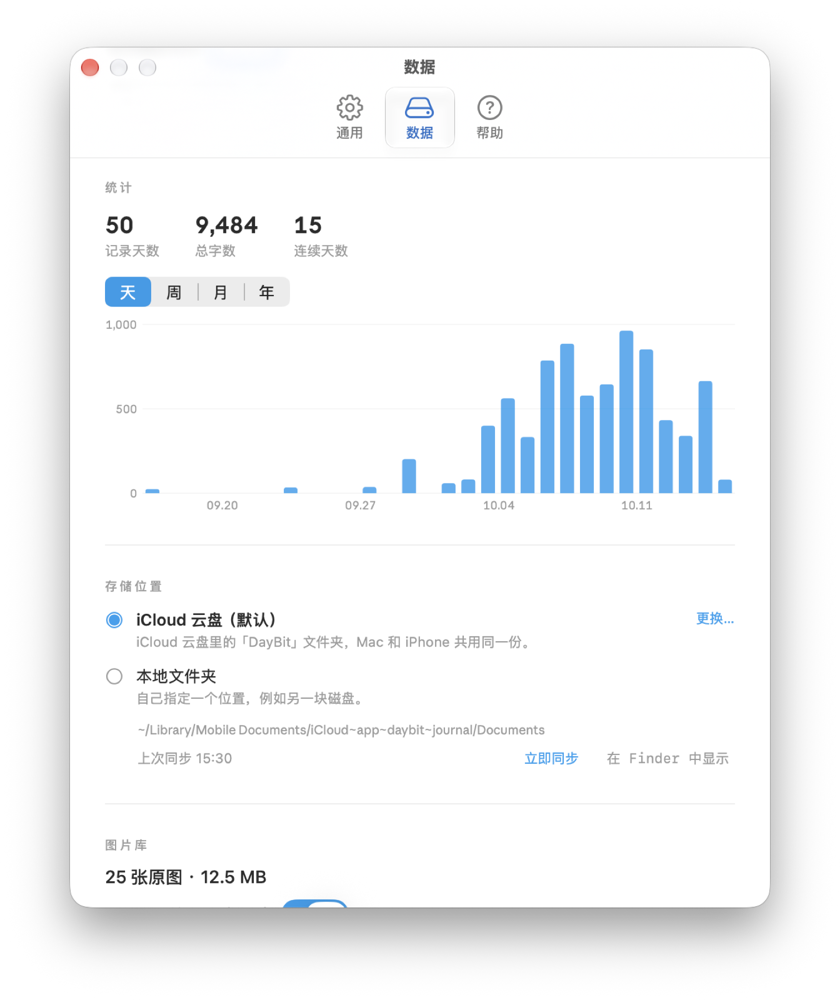
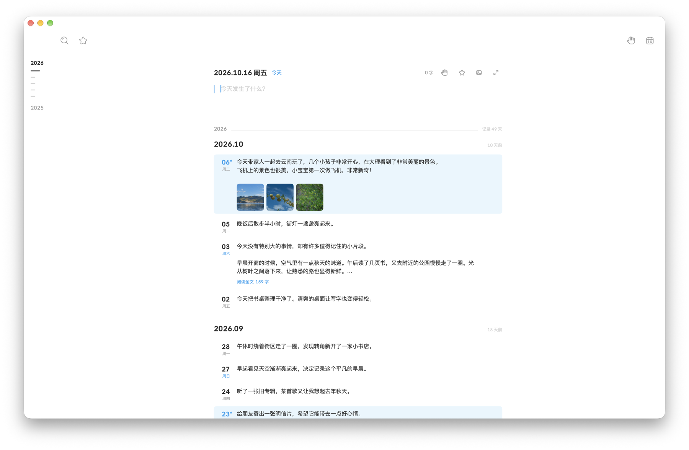
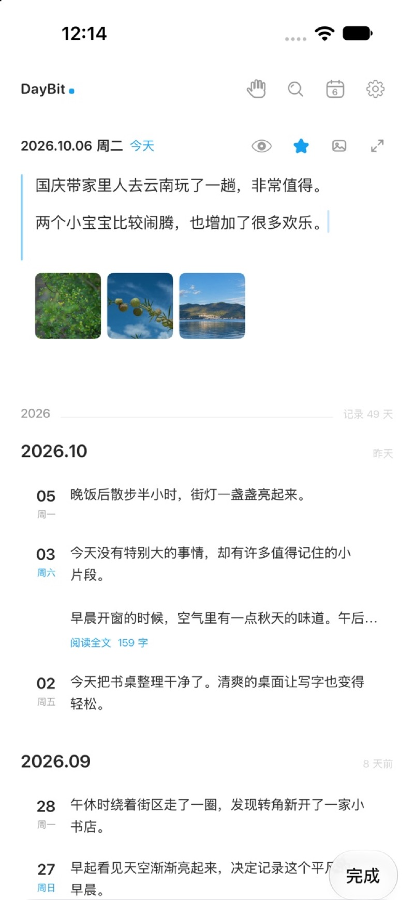
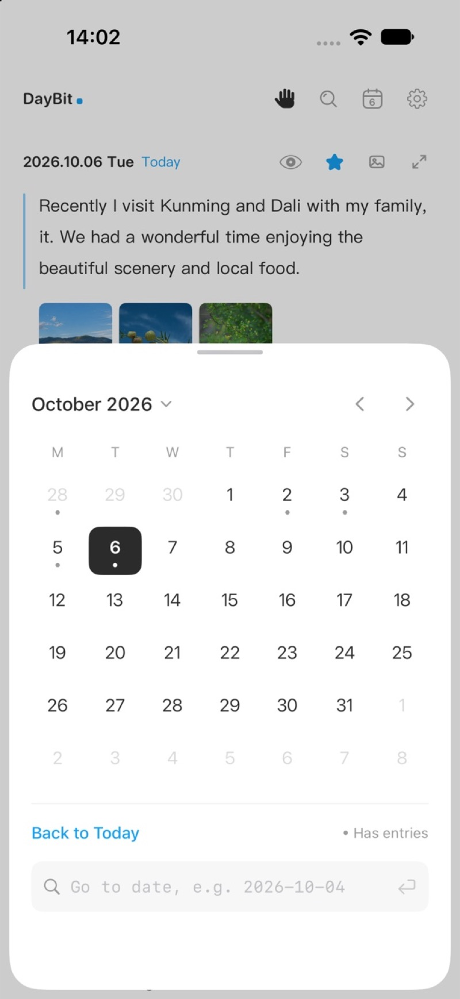
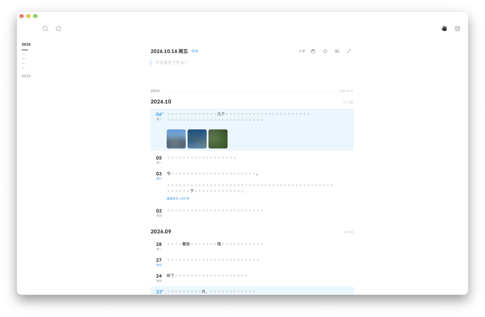
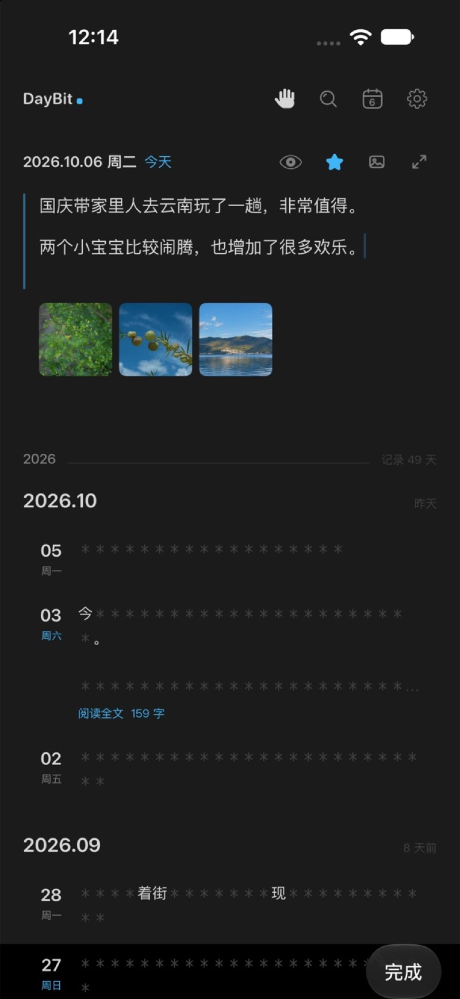
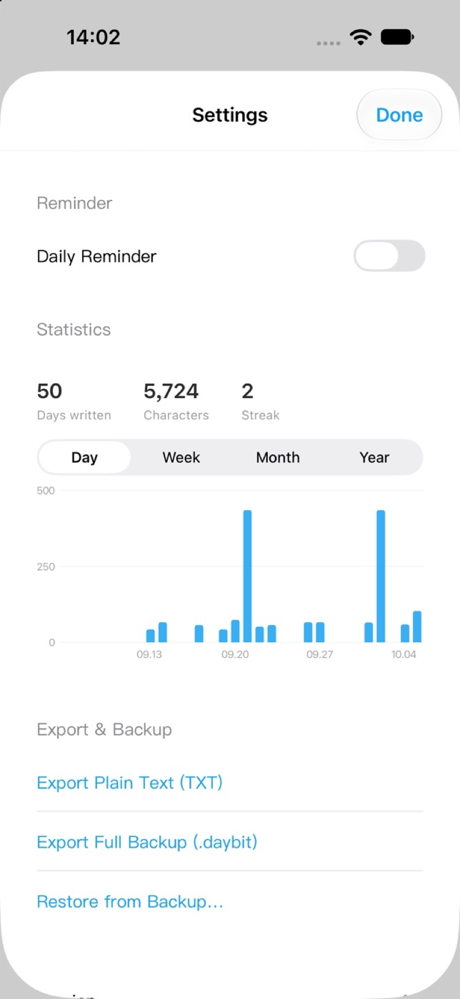
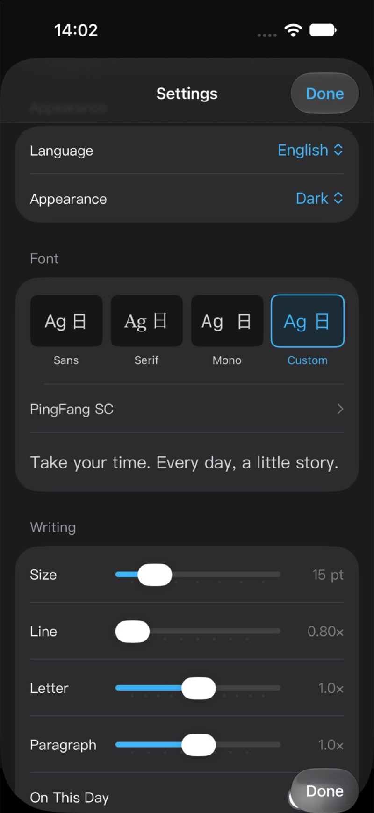

Mac
宽敞的时间线，适合坐下来好好写。搜索、日历、图片与完整的设置一应俱全。

iPhone · Mac · iCloud Drive
每一天，写一点。
一个简单的日记。iPhone 与 Mac 双端可用，共用同一份日记，数据只存放在你自己的 iCloud 云盘。
iPhoneMac无需注册账户


Two devices · One journal
在路上随手写，回到桌面慢慢翻。两端读写 iCloud 云盘里同一个文件夹，无需注册，无需手动合并。
宽敞的时间线，适合坐下来好好写。搜索、日历、图片与完整的设置一应俱全。

打开就写，日历一点回到任意一天。

Simple · Private · Yours
没有信息流，没有账号，没有服务器。只有你的文字和照片。
数据只在你自己的 iCloud 云盘里，随时导出 TXT 或完整备份，随时可查。
打开就写。一条时间线，一个日历，没有多余的东西。
轻点一下，文字化作圆点，不怕被偷看。
趋势记录、图片压缩、夜间模式、字体可调。
Privacy
轻点手掌，文字化作圆点，iPhone 与 Mac 都支持。咖啡馆、地铁、办公室，回溯生活点滴，不怕被偷看。


Details
记录写作趋势，节省空间，让阅读的样子由你决定。

